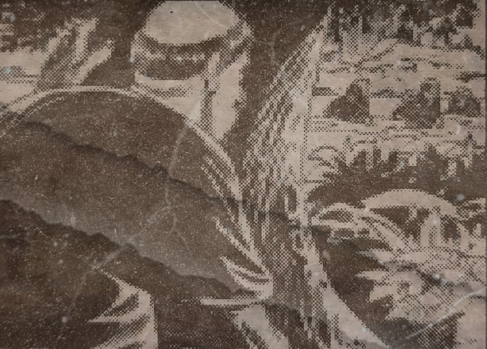
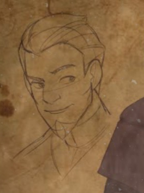
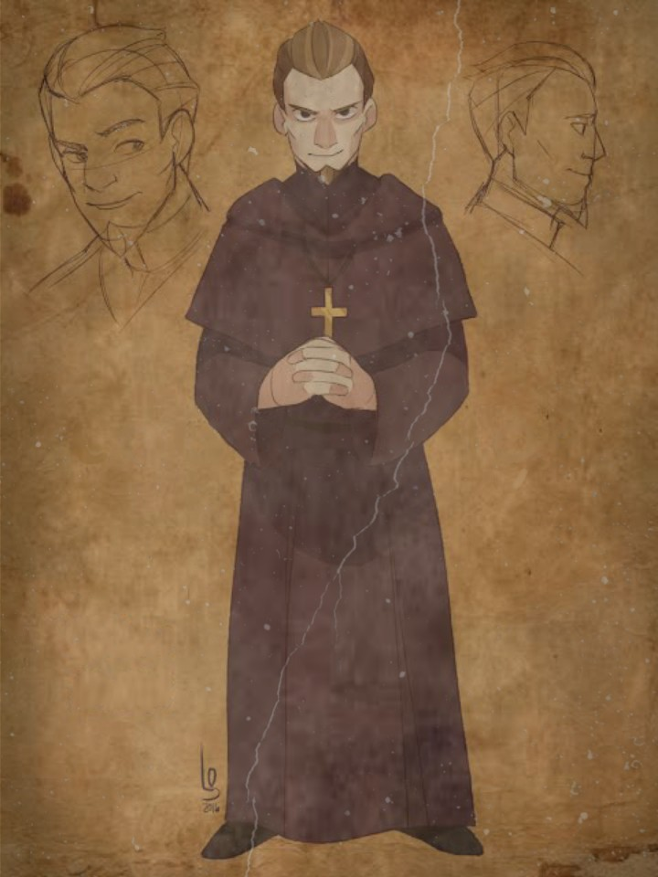
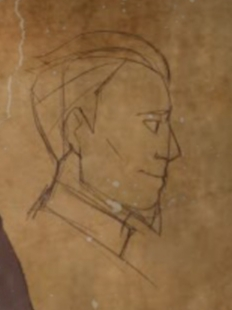

Kabanata 24
Sa Gubat

Nasa kalagitnaan ng piknik ang magkakaibigan na sina Ibarra, Maria, Iday, Victoria, Sinang, Elias at Albino. Sa araw rin na iyon ay maagang natapos ang misa ni Padre Salvi, kaya ay nag-agahan muna siya, habang nagaalmusal ay nakatanggap siya ng liham na naging dahilan ng pagkawala niyang gana kumain. Kaya nagtungo nalang siya sa gubat, pagkarating ay pinabalik niya ang kanyang karwahe nang makarinig siya ng mga boses. Mabagal siyang pumunta sa isang malaking puno upang makita kung sino-sino ang mga iyon. Ang nakita niya ay ang mga dalaga na sina Maria, Victoria at Silang na nagkwekwentuhan at naglalaro ng tubig sa ilog. Agad siyang nagtago upang pagmasdan ang mga dalaga. Ngunit ilang minuto ay umalis na siya at hinanap ang piknik.
Katanghalian ay nagkausapan ang mga nagpipiknik. Nabanggit ni Padre Salvi na may sakit si Padre Damaso kaya hindi ito nakasama. Kalaunan ay dumating si Sisa kaya't napagausapan nila ang kanyang nawawalang anak na napunta si isang mabagsik na pagtatalo sina Padre Salvi at Don Felipo. Iniwan ni Ibarra ang dalawang nagtatalo at pumunta sa kanyang mga kaibigan na naglalaro ng Gulong ng Palad, nang maituro ang laro kay Ibarra, tinanong siya kung natupad na ba ang binabalak niyang bahay-paaralan. Sumangayon agad siya at sinabing malapit na itong itayo. Ibinahagi niya ang kasulatan na binigay rin niya kay Maria at Sinang, nang makita ito ni Padre Salvi mabilis niyang kinuha at pinunit sapagkat ang nilalaman nito ay makasalanan. Nagalit ang mga tao kaya pinaalis ang kura. Maya maya ay dumating ang Guwardya Sibil at Sarhento na dinakip sina Ibarra at Elias dahil sa pananakit raw kay Padre Damaso.
Repleksyon
Ang maari natin matutunan dito ay masama ang manghimasok sa buhay ng may buhay nang walang paalam. Sapagkat hindi lahat ng tama ay tama o ang akala nating mali ay mali. Dagdag pa dito ay tayo ay pantay-pantay lamang ng mga karapatan at kalayaan kaya hindi dapat natin ituring ang antas ng ating pamumuhay ang nakakahigit sa atin.
Mahalagang Tauhan


